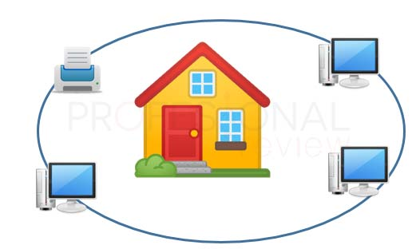
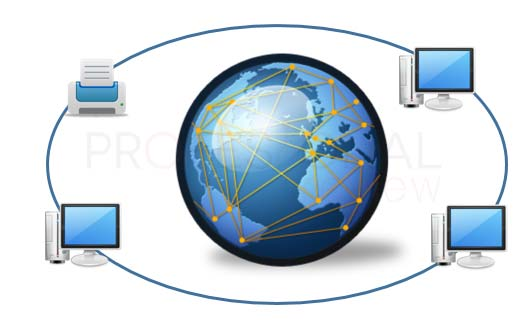
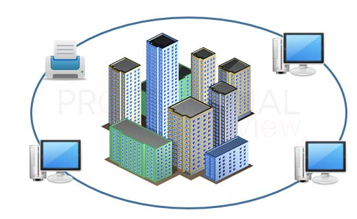
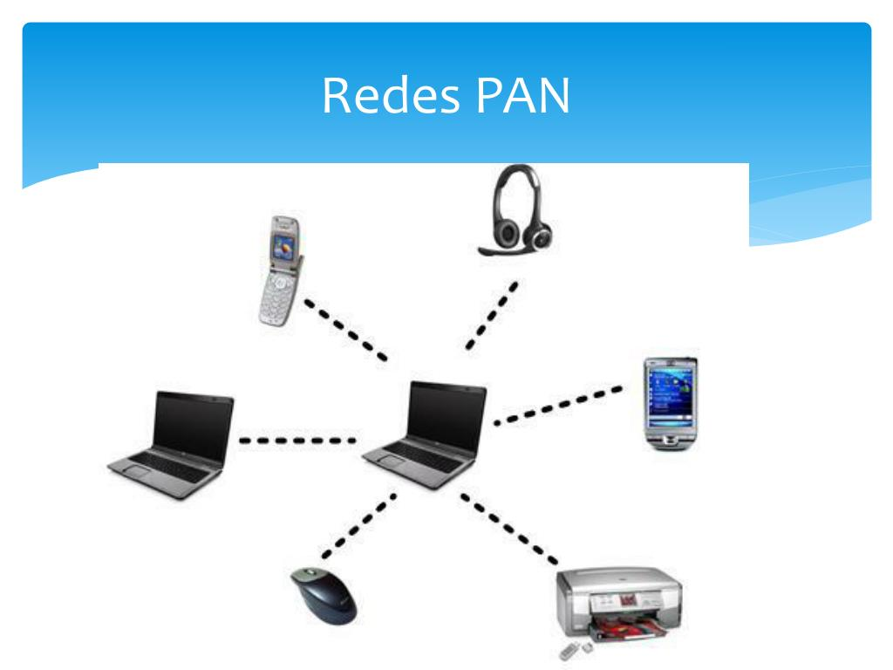

| Definicion | Velocidad | Alcance | Costo | Topología | Ejemplos | |
|---|---|---|---|---|---|---|
| Redes LAN | Conecta dispositivos en un área geográfica pequeña, como una oficina o edificio |
Alta velocidad | Corto alcance |
Bajo costo |
Bus, estrella, anillo, malla |
 |
| Redes WAN | Conecta dispositivos a través de grandes distancias, como ciudades o países. | Baja velocidad | Largo alcance | Alto costo | Estrella, malla, árbol |  |
| Red MAN | Conecta dispositivos en una área metropolitana, como una ciudad. | Velocidad media | Alcance medio | Costo medio | Estrella, anillo, malla |  |
| Red PAN | Conecta dispositivos en un área personal, como un hogar o una oficina pequeña. | Baja velocidad | Corto alcance | Bajo costo | Punto a punto, malla |  |
Admin. (09 de Abril de 2023). Cuadro Comparativo de Redes. Obtenido de https://cuadrocomparativode.net/cuadro-comparativo-de-redes/
Castillo, J. A. (09 de Diciembre de 2018). Que son las redes LAN, MAN y WAN y para que se usan. Obtenido de Profesional Review : https://www.profesionalreview.com/2018/12/09/redes-lan-man-wan/